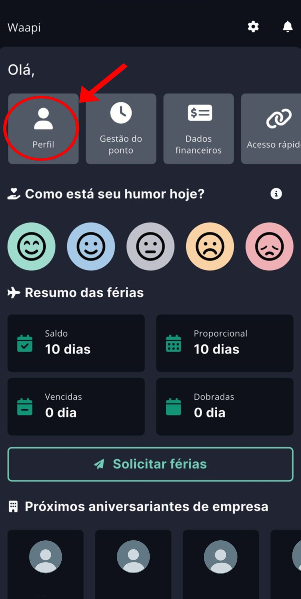
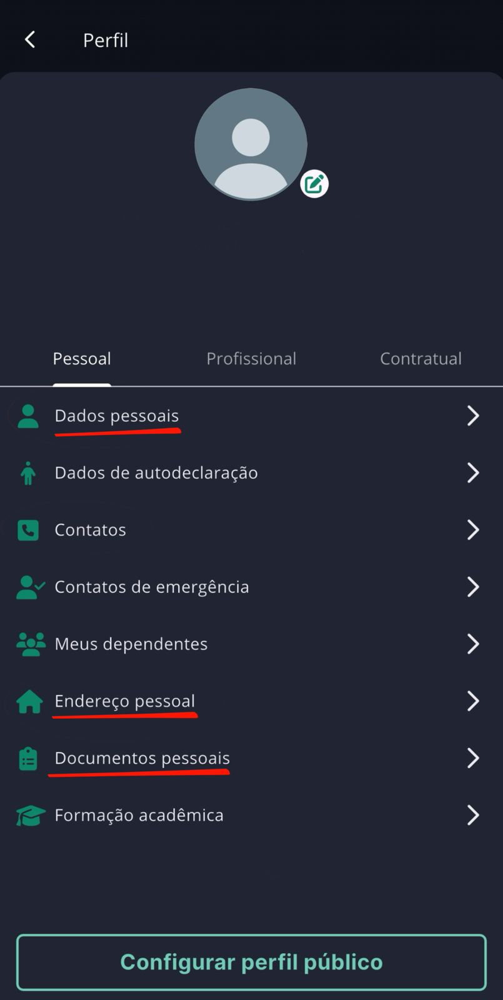
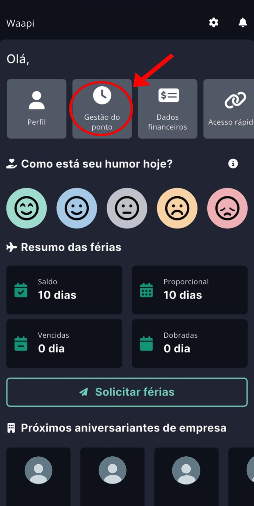
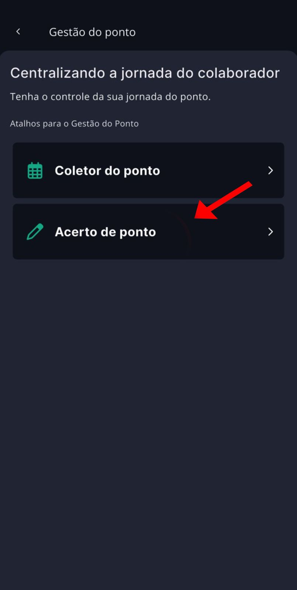
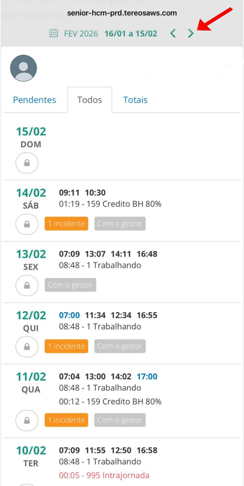
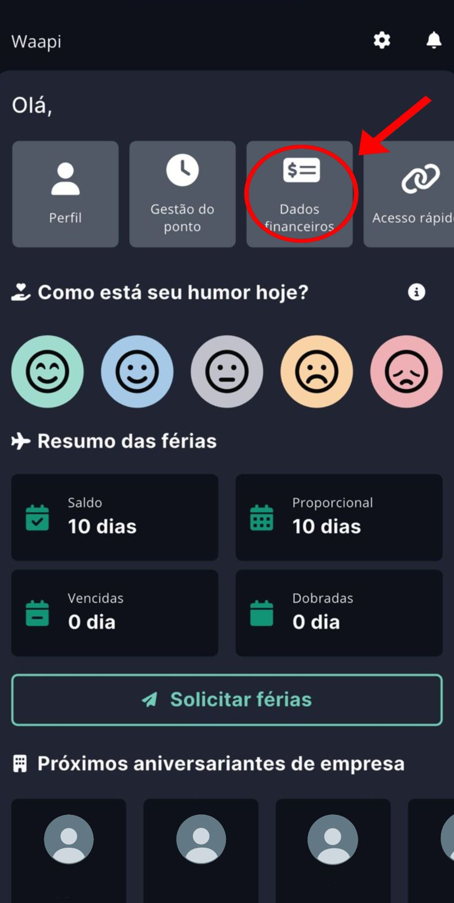
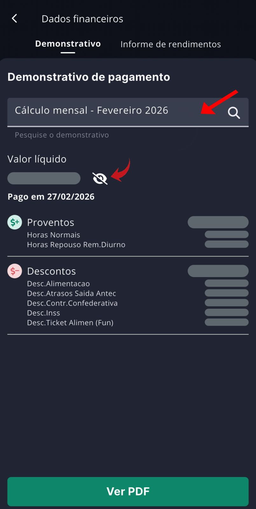
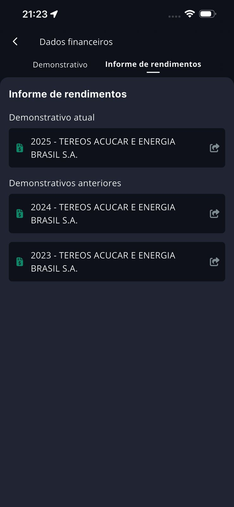

Perfil
Acesse o atalho "Perfil" na tela inicial
Ao abrir o Waapi, você verá quatro atalhos no topo da tela. Toque no primeiro botão, chamado Perfil, conforme indicado pela seta vermelha na imagem abaixo.

Veja e atualize suas informações
Dentro do Perfil, você encontrará três abas: Pessoal, Profissional e Contratual. Na aba Pessoal, você pode acessar e atualizar os itens abaixo:

Gestão do Ponto
Acesse "Gestão do ponto" na tela inicial
Na tela inicial, toque no segundo atalho chamado Gestão do ponto (ícone de relógio), conforme indicado pela seta vermelha.

Escolha "Acerto de ponto"
Dentro da Gestão do ponto, você verá dois atalhos. Para verificar seus registros e solicitar correções, toque em Acerto de ponto, conforme a seta vermelha indica.

Navegue entre os meses
Na tela de Acerto de ponto, você verá os registros de cada dia do mês. Para mudar o mês que deseja consultar, basta tocar nas setas (< >) no canto superior direito da tela, conforme indicado abaixo.

Pendentes — dias com ocorrências que precisam de atenção
Todos — todos os registros do mês
Totais — resumo geral das horas
Dados Financeiros
Acesse "Dados financeiros" na tela inicial
Na tela inicial, toque no terceiro atalho chamado Dados financeiros (ícone de cifrão), conforme a seta vermelha indica.

Aba "Demonstrativo" — seu holerite
Ao entrar em Dados financeiros, você verá a aba Demonstrativo aberta automaticamente. Esta é a tela do seu holerite.

Aba "Informe de rendimentos"
Toque na aba Informe de rendimentos (ao lado de "Demonstrativo") para acessar os documentos necessários para a declaração do Imposto de Renda.
A tela mostra:
Demonstrativos anteriores — informes dos anos passados (2024, 2023...)
